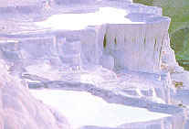
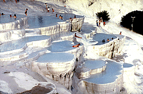
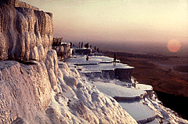
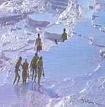

 Pamukkale Travertenleri |
Dünya'da eþine az rastlanan ve Türkiye'nin en güzel doða harikalarýndan biri olan Pamukkale, Denizli ilinin yaklaþýk 19 km kuzeyinde yer alýr. Büyük Menderes Irmaðýnýn kollarýndan çürüksu'nun suladýðý ovanýn kuzeyinden çýkan termal su kaynaklarý ve beyaz travertenleri ile ünlüdür. Travertenler Küçük Çökelce Daðýnýn batý yamaçlarýnda, deniz yüzeyinden 400 m yükseklikte ve yaklaþýk 900.000 metrekarelik bir yaylaya yayýlmýþtýr. Sýcaklýðý yaklaþýk 35 C olan termal sularý sindirim sistemi, dolaþým, solunum ve romatizma hastalýklarýna iyi gelmektedir. Doðal cazibesinin yanýnda, travertenlerin hemen yanýbaþýnda yer alan antik Hierapolis kentinin kalýntýlarý, yörenin tarihi zenginliðine katkýda bulunur. |
| Bergama kralý II. Eumenes tarafýndan MÖ 190 yýlýnda kurulmuþ olan Hierapolis, eski Yunancada "Kutsal Kent" anlamýna geliyordu. Muhtemelen termal maden sularýnýn varlýðý ve yörenin olaðanüstü görünümü antik çað insanlarýný etkilemiþ olmalýdýr ki, dönemin zenginleri Roma'nýn ve Anadolu'nun çeþitli bölgelerinden gelip, yaþamlarýnýn son dönemlerini Hierapolis kentinde geçirirlerdi. Bu nedenle kentin Nekropolis'i (mezarlýðý) son derece anýtsal ve deðiþik yörelere ait mezarlarla süslüdür. |  |
 |
Ýsa'nýn 12 havarisinden biri olan Aziz Philip'in burada katledilmiþ olmasý ve mezarýnýn bu bölgede yer almasý, yörenin Hýristiyanlýk ve Bizans dönemlerinde de önemini korumasýný saðlamýþtýr. 1334 yýlýnda meydana gelen þiddetli bir depremle kent yýkýlmýþ, yöre terkedilmiþ ve Selçuklular Denizli kentini kurmuþlardýr. |
| Doðal ve tarihi özellikleri ile termal sularý Pamukkale'nin turistik önemini arttýrmýþtýr. Her yýl pek çok yerli ve yabancý turist yöreyi ziyaret edip, burada konaklamaktadýr. Ancak yörede artan otel sayýsý ve bu otellerin mevcut termal sularý kendi havuzlarýna aktarmalarý, travertenlerin yenilenememesine yol açmaktadýr. Bu nedenle yöre Kültür ve Turizm Bakanlýklarýnýn ortak kararý ile "Milli Park" haline getirilmiþ ve daha önemlisi 1991 yýlýnda UNESCO tarafýndan "Dünya Doðal ve Kültür Mirasý" kapsamýna alýnarak uluslararasý koruma çalýþmalarý baþlatýlmýþtýr. |  |
|
Traverten çok yönlü, çeþitli nedenlere ve ortamlara baðlý, kimyasal
reaksiyon sonucu çökelme ile oluþan bir kayadýr. Pamukkale termal
kaynaðýný meydana getiren jeolojik olaylar geniþ bir bölgeyi etkilemiþtir.
Bu bölgede sýcaklýklar 35-100 derece arasýnda deðiþen 17 sýcak su
alaný bulunmaktadýr. Pamukkale termal kaynaðý,
bölgesel potansiyel içindeki bir ünitedir. Kaynak, antik dönemlerden beri
kullanýlmaktadýr. Termal su kaynaktan çýktýktan sonra, 320 m uzunluðunda bir
kanal ile traverten baþýna gelmekte ve buradan, 60-70 m lik kýsmý çökelmenin
olduðu traverten katkatlarýna dökülmekte ve ortalama 240-300 m yol katetmektedir.
Katkat havuzcuklarýnda ve katkat seddelerinde, çökelmekte olan kalsiyum karbonat,
baþlangýçta yumuþak bir jel halindedir. Zaman içinde
sertleþmekte ve traverten olmaktadýr. Ancak ziyaretçiler tarafýndan katkatlar
üzerinde gezilmesi ve oynanmasý, henüz yumuþacýk haldeki kalsiyum karbonatlarýn
ezilmesine, daðýlmasýna neden olmaktadýr. Termal kaynak suyu, normal þartlara dönüþmeye ve traverten oluþumuna neden olmaktadýr. Termal sudaki kalsiyum bikarbonatýn aþýrý miktarda bulunmasý ve suyun yüzeye çýkýþý sonucu karbondioksit açýða çýkmakta ve kalsiyum karbonat çökmektedir. Beyazlýðýn oluþumunda, hava sartlarý, ýsý kaybý, akýþýn yayýlýmý ve süresi etkilidir. Çökelme, termal sudaki karbondioksitin havadaki karbondioksit dengeye gelinceye kadar devam etmektedir. Yerinde yapýlan analizlerde, kaynak baþýndaki suyun karbondioksit miktarý ortalama 725mg/1 iken, suyun travertenleri terk ettiðinde bu miktar 145 mg/1'ye düþmektedir. Keza kalsiyumbikarbonat da benzer þekilde 1200 mg/1'den 400 m/1'ye düþmektedir. Keza Ca 576/8 mg/l düþmektedir. Bu analiz sonucuna göre, 1 lt sudan, traverten üzerine 499.9 mg CaCO3 çökelmektedir. Bu miktar, 1 1/sn su için günde 43191 gr. çökelme demektir. Ortalama yoðunluðu 1.48 g/cm3 alan kaplar. Suyun ortalama debisi 466.21/sn olduðuna göre 13584 m2 alan beyazlatýlabilecektir. Pratikte bu þartlarý yerine getirmek güçtür. Ancak bu teorik yaklaþýma göre yýlda 1 mm kalýnlýðýnda 4.9 km2 alan beyazlatýlabilir. |